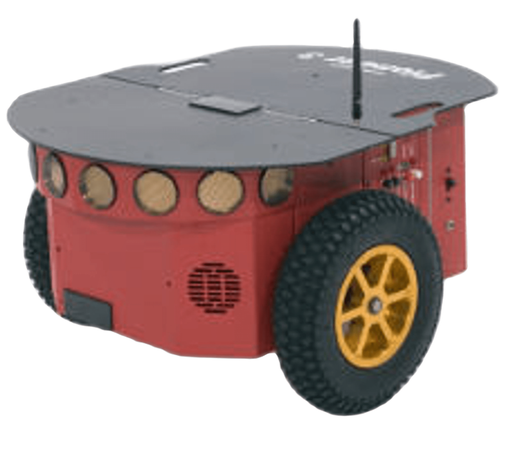
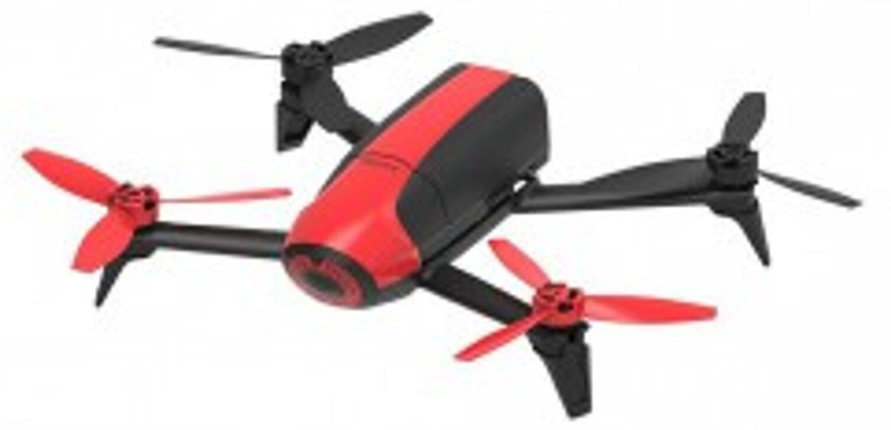

Introdução
AuRoRA (Autonomous Robots for Research and Application) é uma plataforma de simulação e experimentação de robôs móveis em tempo real, hospedada atualmente no MATLAB, onde seus componentes (robôs, sensores, atuadores, modelagem dinâmica e cinemática de UAVs, controle, etc.) são simulados usando modelos matemáticos descritivos.
A AuRoRA proporciona ferramentas para simular e controlar robôs com diferentes tipos e características, bem como diferentes estratégias de controle envolvendo um ou mais robôs simultaneamente. A plataforma é dividida em vários módulos que podem ser habilitados ou desabilitados, por exemplo, um joystick pode ser habilitado para assumir o controle de um VANT (Veículo Aéreo Não Tripulado), como uma medida de segurança.
Durante a execução, seja em simulação ou experimentação em tempo real, a AuRoRA estabelece uma comunicação bidirecional, coletando dados sensoriais e enviando sinais de controle para que o robô execute a tarefa designada. No entanto, essa ação só ocorre com a autorização de execução ativada; caso contrário, nenhuma ação é realizada. Quando autorizada, dados de referência de navegação e erros de navegação são obtidos e, com base nessas informações, os sinais de controle necessários são determinados e transmitidos ao robô para a execução do comando.
Em um VANT real, os sinais de controle são enviados ao sistema embarcado, que os aplica diretamente aos atuadores. Após interagir com o ambiente, os sensores embarcados registram os valores da nova condição de voo, transmitindo-os de volta à plataforma para reiniciar o ciclo de controle.
Na simulação de um VANT, os sinais de controle são direcionados ao modelo dinâmico, incluindo o modelo do atuador e do corpo rígido, considerando incertezas e perturbações nas manobras de voo. Após atuar no modelo, a postura futura é determinada por integração numérica, atualizando as variáveis de estado. Nesse ponto, esses dados ficam disponíveis para uma nova permissão de execução do sistema de controle.
Além disso, a plataforma apresenta a funcionalidade de exibição gráfica. Por exemplo, durante a simulação de um voo de um VANT, quando a função de exibição gráfica está ativada, uma ilustração do estado atual é feita ao longo da tarefa de voo, em cada período pré-definido.
Finalmente, é relevante mencionar que, ao final da rotina de navegação, todos os dados são armazenados, criando um registro que pode ser recuperado a qualquer momento para análise do progresso da missão.
Robôs
A plataforma AuRoRA oferece acesso à alguns robôs para simulação e controle, incluindo o Pioneer 3DX, o ArDrone 2.0 Parrot e o Bebop 2 Parrot. Cada um desses robôs apresenta diferentes características e habilidades, isso confere à plataforma uma notável versatilidade, permite a exploração de simulação e controle em uma ampla gama de cenários e contextos, adaptando-se às necessidades específicas de cada aplicação.
O Pioneer 3DX trata-se de um robô terrestre com uma plataforma móvel. Sendo um veículo terrestre não tripulado (VTNT) fabricado pela empresa Adept Mobile Robots, equipado com sonares e enconders, ele oferece a oportunidade de simular e testar estratégias de navegação em terrenos desconhecidos.
O ArDrone 2.0 é conhecido como um “drone quadricóptero” fabricado pela empresa Parrot, que permite a simulação e experimentação de estratégias de controle em ambientes aéreos. Trata-se de um veículo aéreo não tripulado (VANT) equipados com sonares, encoders, câmeras dianteira e inferior, sendo muito eficaz para tarefas de mapeamento aéreo.

O Bebop 2 é outro “drone quadricóptero” do tipo VANT da empresa Parrot. Trata-se de um modelo superior ao ArDrone 2.0, que apesar de possuir os mesmos equipamentos do seu antecessor, suas qualidades são superiores, possibilitando melhores resultados.
